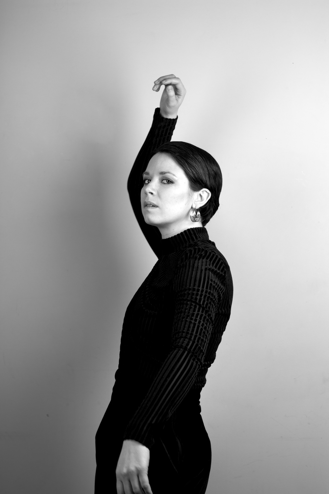

The Many Facets of Kim Moore
I only knew one Scot when I decided to take my first trip to Glasgow in late May 2015. It was my friend Luke's birthday and we drove straight from the airport to the Glad Café. He wanted to introduce me to his friend who was playing a gig that afternoon. Kim's the first friend I met in Glasgow. I look back on the day as a beautiful announcement of what my life was about to become (I moved for good seven months later). I remember sipping a ginger beer listening to the beautiful music of Wolf, Kim Moore's solo project, already imagining what my life could be if I lived here. That's why it felt natural to ask her to be part of my photo experiments in the flat earlier this year.
We first warmed up with a few portraits in the living room to get used to one another in this new dynamic - with me behind the camera. Here's the first series in black and white. I like her natural grace and the curves she made with her arms. Although I knew she felt a bit shy at first, she's very expressive and her eyes show assertiveness.

What speaks to me in this series is the contradiction the artist can have between the desire and the fear to show or hide. This is what I like about these photos. Again, the look on Kim's face is focused and strong, it's impossible not to see her determination but her hands are in the way, making the interaction not so obvious.
The photo above goes even further as Kim looked at me from upside down. Her look then becomes more enigmatic because it is not so direct. In the end, this series looks more natural and relaxed as we started to let ourselves go a little bit, without so much self-consciousness.
After shooting in a swimming pool and trying a few phone selfies underwater, I wanted to push my 'water experiments' further with a model keen to jump in my bath. Kim was the one and she played the game very well. I didn't expect the photos to turn out so well. I had a lot of fun editing them, trying different treatments. I like all the tones and couldn’t decide on one while I was editing – so feel free to comment on your favourites! It was quite challenging for Kim as she could not really see or hear me at times while I was trying to catch the perfect glance/position, where the water would reach her face but not too much, her bottom lip but not her teeth, her neck but not her chin, the palm of her hand but not her fingers, her elbow but not her hands. It took me a bit of time to find where the level of water should be on her face and body. Sorry Kim you had to swallow a few mouthfuls during this experiment! Thank you for your patience.
TECHNICAL NOTES:
- The start of a shoot can feel a bit conventional, a bit stiff. I made a mistake by starting shooting too randomly. I got a bit lost in the process. I think it's important to keep in mind what you're doing and what for.
- In the upside down photo, you can see the wall is half beige half black. It was not meant to be like that. I improvised a black backdrop with a scarf taped on my wall (welcome to my DIY world) and didn't have time to figure out a way to make the background bigger so I kept it as it appears on the photo. I actually really like the way it splits the frame in two. It changes the way we look at the photo even more, adding to the odd position of the model.
- Remember that people can't hear you loud and clear when they're half underwater. Also they have to work out a way not to swallow water while moving their head around below the surface and trying not to hold their nose!
- I wanted to make the water look opaque and milky, so we used corn flour to change its colour and it worked perfectly. Kim wore a long black dress but had to take it off eventually because it made the water look darker despite its milky tone.
- Regularly fill the bath with water at the right temperature so that your model's skin doesn't turn blue or red. It sounds obvious but you tend to forget about these things when you're in action!